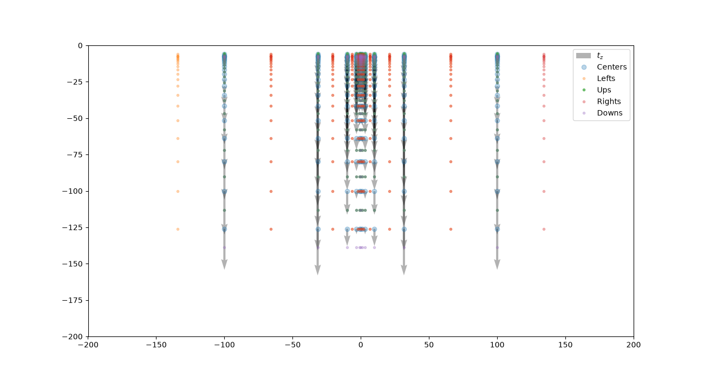
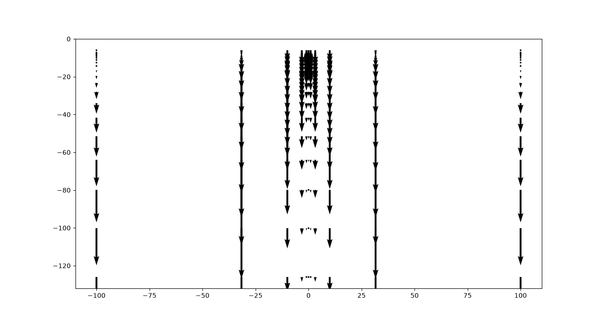
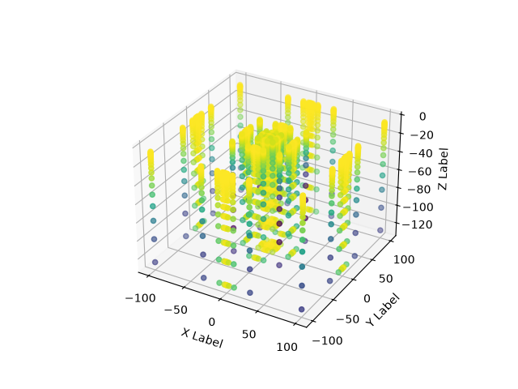

Note
Go to the end to download the full example code.
Centered Grids for Geophysics¶
Precomputing the gravity kernel of a measurement-centered grid
This tutorial explains the concept of a centered grid and uses it to precompute the tz kernel needed for GemPy’s forward gravity computation.
Concept of a measurement-centered grid¶
Geophysics preprocessing builds on the centered grid (see the Grids tutorial in the Advanced section) to precompute the constant part of forward physical computations, such as gravity:
# .. math::
# F_z = G_{\rho} ||| x \ln(y+r) + y \ln (x+r) - z \arctan (\frac{x y}{z r}) |^{x_2}_{x_1}|^{y_2}_{y_1}|^{
# z_2}_{z_1}
# where we can compress the grid-dependent terms as
# .. math::
# t_z = ||| x \ln (y+r) + y \ln (x+r)-z \arctan ( \frac{x y}{z r} ) |^{x_2}_{x_1}|^{y_2}_{y_1}|^{z_2}_{z_1}
# By doing this decomposition and keeping the grid constant, we can compute the forward
# gravity with a single operation:
# .. math::
# F_z = G_{\rho} \cdot t_z
# Importing gempy
import gempy as gp
# Aux imports
import numpy as np
import pandas as pd
import matplotlib.pyplot as plt
np.random.seed(1515)
pd.set_option('display.precision', 2)
from gempy_engine.core.data.centered_grid import CenteredGrid
centered_grid = CenteredGrid(
centers=np.array([0,0,0]),
resolution=[10, 10, 20],
radius=100
)
Instantiating CenteredGrid creates a constant kernel around the point (0, 0, 0).
This kernel will be what we use for each device.
array([[-100. , -100. , -6. ],
[-100. , -100. , -7.2 ],
[-100. , -100. , -7.52912998],
...,
[ 100. , 100. , -79.90178533],
[ 100. , 100. , -100.17119644],
[ 100. , 100. , -126. ]], shape=(2541, 3))
\(t_z\) is only dependent on distance and therefore we can use the kernel created in the previous cell
gravity_gradient = gp.calculate_gravity_gradient(centered_grid)
gravity_gradient
array([-8.71768928e-05, -6.45647022e-05, -3.41579985e-05, ...,
-1.09610058e-02, -1.41543038e-02, -1.51096613e-02], shape=(2541,))
To compute tz we also need the edges of each voxel. The distances to the
edges are stored in left_voxel_edges and right_voxel_edges. We
can plot all the data as follows:
fig = plt.figure(figsize=(13, 7))
plt.quiver(a[:, 0].reshape(11, 11, 21)[5, :, :].ravel(),
a[:, 2].reshape(11, 11, 21)[:, 5, :].ravel(),
np.zeros(231),
tz.reshape(11, 11, 21)[5, :, :].ravel(), label='$t_z$', alpha=.3
)
plt.plot(a[:, 0].reshape(11, 11, 21)[5, :, :].ravel(),
a[:, 2].reshape(11, 11, 21)[:, 5, :].ravel(), 'o', alpha=.3, label='Centers')
plt.plot(a[:, 0].reshape(11, 11, 21)[5, :, :].ravel() - b[:, 0].reshape(11, 11, 21)[5, :, :].ravel(),
a[:, 2].reshape(11, 11, 21)[:, 5, :].ravel(), '.', alpha=.3, label='Lefts')
plt.plot(a[:, 0].reshape(11, 11, 21)[5, :, :].ravel(),
a[:, 2].reshape(11, 11, 21)[:, 5, :].ravel() - b[:, 2].reshape(11, 11, 21)[:, 5, :].ravel(), '.', alpha=.6,
label='Ups')
plt.plot(a[:, 0].reshape(11, 11, 21)[5, :, :].ravel() + c[:, 0].reshape(11, 11, 21)[5, :, :].ravel(),
a[:, 2].reshape(11, 11, 21)[:, 5, :].ravel(), '.', alpha=.3, label='Rights')
plt.plot(a[:, 0].reshape(11, 11, 21)[5, :, :].ravel(),
a[:, 2].reshape(11, 11, 21)[:, 5, :].ravel() + c[:, 2].reshape(11, 11, 21)[5, :, :].ravel(), '.', alpha=.3,
label='Downs')
plt.xlim(-200, 200)
plt.ylim(-200, 0)
plt.legend()
plt.show()

Just the quiver:

Remember this is happening always in 3D:

Total running time of the script: (0 minutes 0.444 seconds)